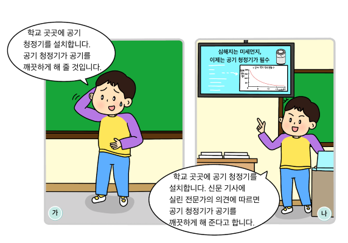

1번
발표 장면에 대해 옳게 설명한 친구를 고르세요.

▸태우
:
가
는 자신감 있는 태도로 이야기하고 있다.
▸미림
:
가
는 적절한 근거 자료를 제시하며 이야기하고 있다.
▸재석
:
가
와
나
모두 바른 언어 사용에 대한 의견을 발표하고 있다.
▸준혁
:
나
는 신문 기사에 실린 전문가의 의견을 자료로 제시하고 있다.
▸서현
:
나
는 정보를 눈으로 직접 확인할 수 있어 의견과 근거를 이해하기 쉽다.